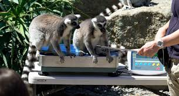

The lemurs are social animals. They live in troops. They can communicate with eachother using sounds, facial movemnts, and scent.
They enjoy sunbathinng and often relax in potions that are similar to many yoga postions.
The lemurs are native to Madagascar. Many people, especailly children, might recognize them from the Madagascar movies that feature the animals.
What do Lemurs eat?